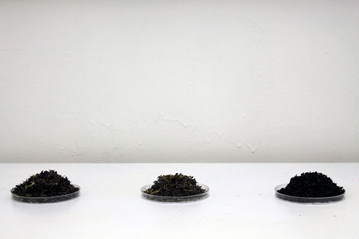

005 : 언어의 불 명확성


STAY WITH ME WHEN I DIE, 나무판자, 야광안료, 사이렌 조명, 가변설치, 2018
언어의 불 명확성
나는 서로의 소통 의 과정에서 발생되는 오류는 어디에서 부터 온 것일까 고민했다. 서로 대화를 나누며 같은 언어를 사용하지만 그 단어들의 정확한 정의는 없다는 생각을 했다. 단어의 정의는 사회적인 맥락 속에서 계속해서 변화하며 우리는 그 사회적 맥락을 읽어야 단어의 뜻을 알 수 있고 상대방과 의사교환을 할 수 있다. 이러한 맥락에 대한 이해가 선행되지 못한다면 단어는 불명확한 글자로 변하게 된다.
이러한 불명확한 글자들은 다양한 방식을 통해 작업으로 드러나고 있다.
반투명한 글자들 이라는 작업은 다자이 오사무의 『사양』 에서 발췌한 한 문단을 가지고 진행한 작업이다. 어머니와 딸이 인간과 동물의 차이점에 대해 나누는 대화의 내용이 프레임에 빛을 이용하여 영사되어진다. 야광안료로 인해 그 이전에 보여졌던 글자들의 레이어가 계속해서 쌓여가며 시간이 지날수록 글자들이 무엇을 말하고자 하는지에 대해 더 모호해진다.
계속해서 흐릿해지고 사라져가는 글자들은 소통의 오류에 대한 이야기를 보여준다.

반투명한 글자들. 약 70*136*110, 나무 프레임, 야광안료, 빔 프로젝트, 2016

실질적 오류, 약 90*200*80, 검정색 꽃, 아크릴 박스, 책상, 2016